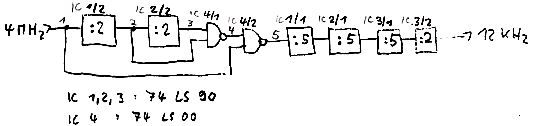

Nascom Journal |
3/81 |
Die MDCR-Signale haben folgende Bedeutung:
| WDA | – | Schreibdateneingang |
| BET | – | Bandendeanzeige |
| WCD | – | Schreibbefehleingang |
| REV | – | Eingang für Rückspulbefehl |
| FWD | – | Eingang für Vorspulbefehl |
| RDC | – | Lesetaktausgang |
| RDA | – | Lesedatenausgang |
| CIP | – | Anzeige für eingelegte Kassette |
| WEN | – | Schreibschutzanzeige |
Die Daten müssen flußwechselkodiert auf's Band geschrieben werden, d.h. eine 1 wird als 1-0-Folge, eine 0 als 0-1-Folge am WDA-Eingang geschrieben. Die Schreibfrequenz liegt somit bei 12000 Halbbit/sec.; jedes Halbbit muß 83 usec. lang sein. Bei meinem Interface erfolgt das Timing per Hardware; alle 83 usec gibt die steigende Flanke eines 12kHz-Signals einen Interrupt über das Strobe-Signal von Port A und schaltet über FF1 gleichzeitig Bit 5 von Part B auf die Schreibdatenleitung. Die 12 kHz lassen sich aus den 4 MHz des Nascom folgendermaßen erzeugen:
Wem dies zu aufwendig ist, der kann das 12kHz-Signal und FF1 ganz weglassen, Bit 5 direkt (gestrichelte Linie) mit der. Datenleitung verbinden und ein Software-Timing über Zeitschleifen vorsehen. Die Zeiten brauchen nicht genau eingehalten zu werden, der MDCR verträgt auch kleinere Abweichungen ohne Lesefehler.
FF2 schaltet die Bandbewegungsbefehle FWD und REV ab, wenn BET auf 0 geht. Es läßt sich durch softwaremäßigen Bandstop (Bit 6 und 7 auf 1) wieder rücksetzen. Die restlichen Gatter dienen der Pegelumsetzung, da der MDCR mit 12-V-CMOS-Logik arbeitet. Es mag etwas suspekt erscheinen, TTL-Gatter mit 12V-Pegeln anzusteuern, ist aber hier wegen der geringen Ausgangsströme möglich.
| Seite 3 von 24 |
|---|